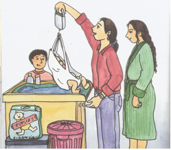

HAUSBESUCHE UND SPRECHSTUNDEN
Ein einziger postnataler Hausbesuch wird jeder Mutter von der Krankenkasse zurückerstattet zusätzlich zur Betreuung bei ambulanter Geburt.
Dieser Hausbesuch ist sehr nützlich für alle anfallenden Fragen und Unsicherheiten in der Anfangsphase mit dem Neugeborenen.
Für diesen einmaligen Hausbesuch benötigen Sie kein Rezept vom Arzt!

( aus: Was macht eigentlich eine Hebamme?
Von Tara R. Franke)
Falls zusätzliche Hausbesuche oder Sprechstunden erforderlich sind, werden diese auch von der Krankenkasse übernommen. Sie dienen dazu das Stillen oder das Gewicht des Kindes oder eine Krankheit zu überwachen.
Hierzu benötigen Sie allerdings ein Rezept Ihres Frauenarztes oder Ihres Kinderarztes falls Sie eine Rückerstattung der Krankenkasse wünschen.
Weitere Hausbesuche oder Sprechstunden können auch auf eigene Rechnung verabredet werden.